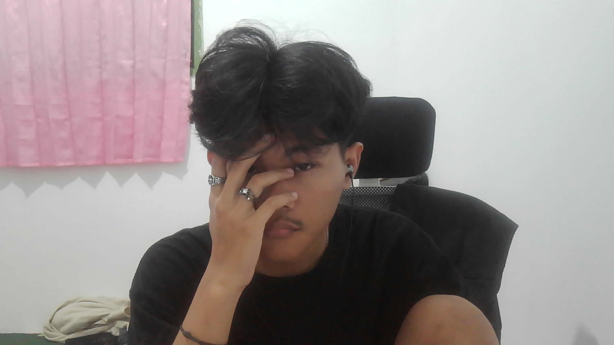

ゴゴゴゴゴ
ゴゴゴゴゴ
★ BIODATA BIZARRE ★
Halo, Aku
Halo, Aku
Ahmad Fikri!
Selamat datang di duniaku yang luar biasa! Di sini kamu bisa mengenal siapa aku, apa yang kusuka, dan di mana kamu bisa menemukanku. Bersiaplah untuk petualangan yang bizarre!
Lihat Profil Media Sosial
Sekilas Tentang Aku
NicknamePikri
CityPurbalingga
HobyyNgoding dikit,Listen to music, Gaming
&Watch Anime
MottoAir tenang menghanyutkan!